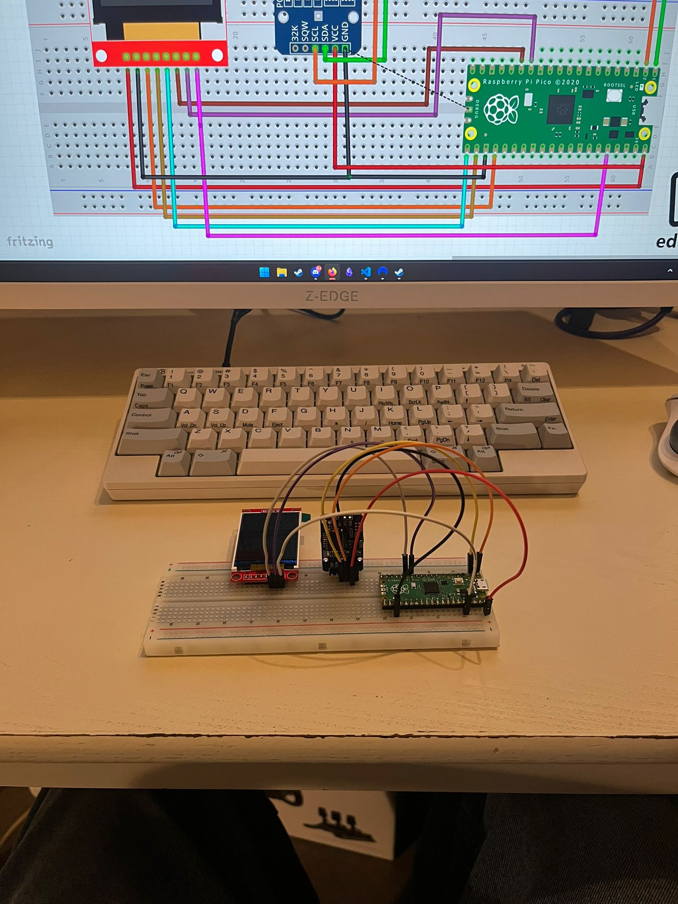
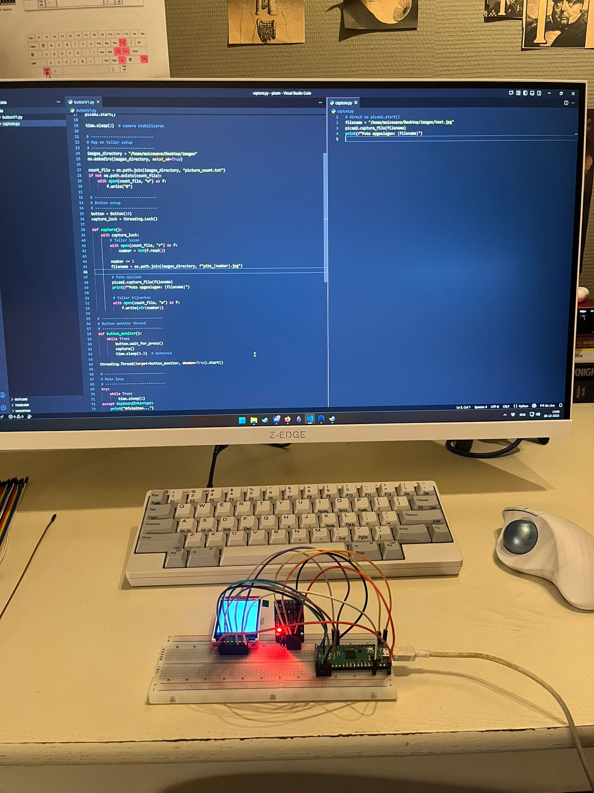
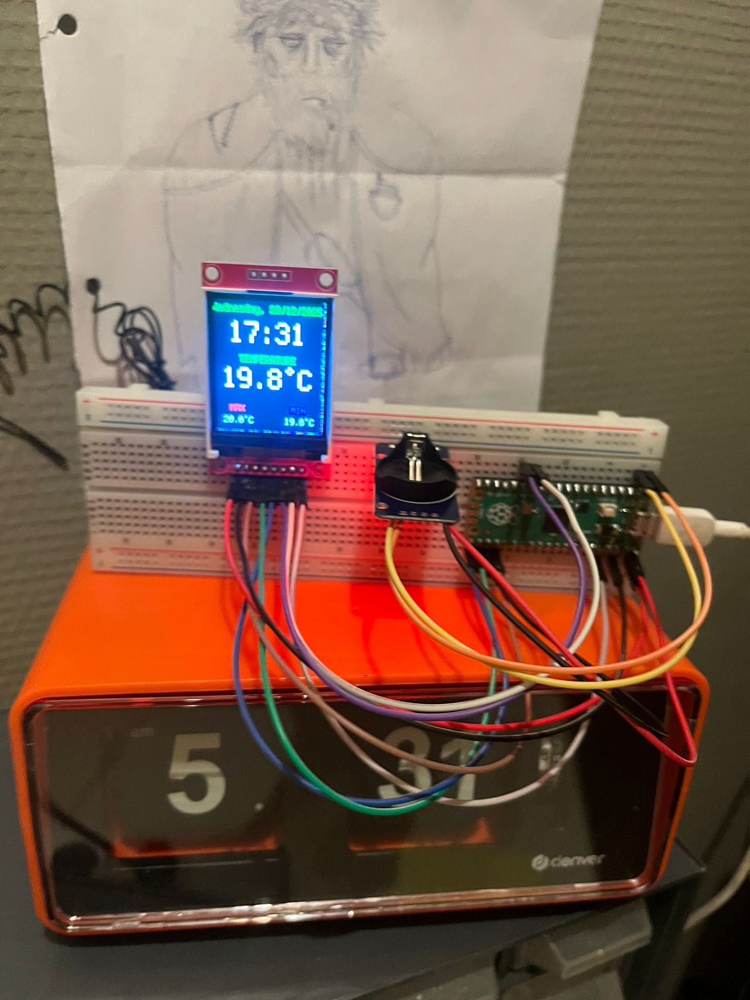
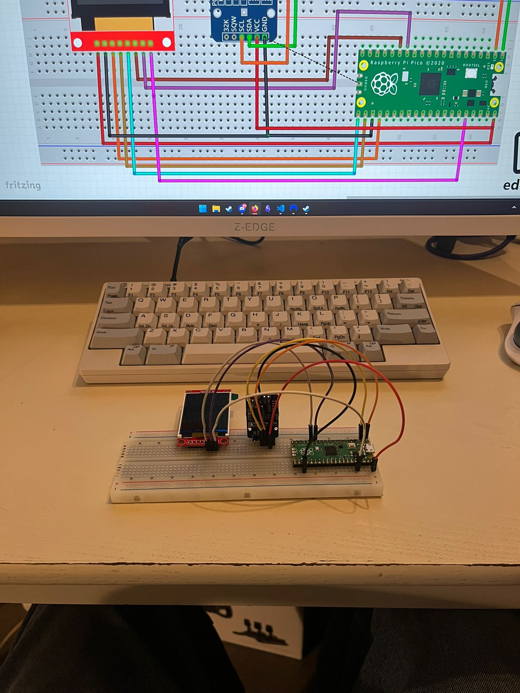
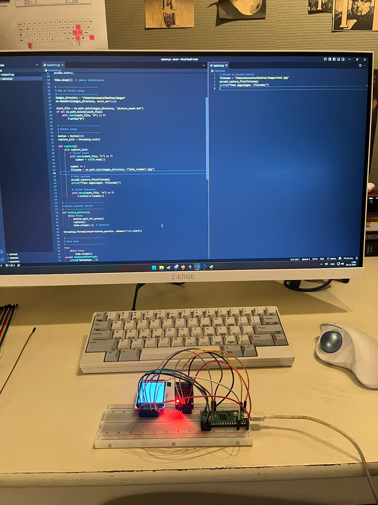
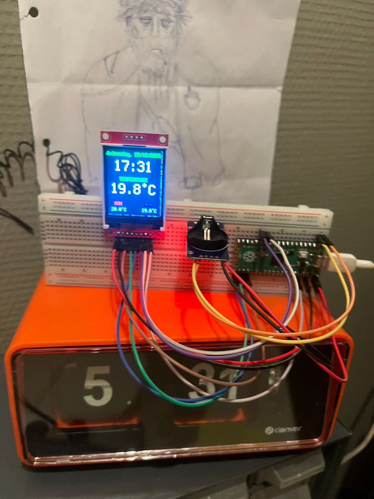

Room Clock on a Breadboard
Update – 2025: A small room clock built with a Raspberry Pi Pico,
an RTC module, and a display — all wired up on a breadboard.
Simple hardware, simple code, but surprisingly useful.
Intro
I wanted a small device that shows the current date, time, and room temperature at a glance. No Wi-Fi, no apps, no syncing.
Just something that sits on my desk, always on, and quietly does its job.
Why the Raspberry Pi Pico?
The Raspberry Pi Pico is perfect for this kind of project. It boots instantly, uses very little power, and works great for simple hardware-focused builds.
Everything is connected on a breadboard, which makes it easy to tweak, modify, or expand later.
The RTC (Real-Time Clock)
The clock uses an RTC module with a coin cell battery. This means it keeps track of the time even if the power is unplugged.
If the power goes out, the Pico forgets nothing. When power comes back, the correct time is still there.
What It Displays
- Current date
- Current time
- Current room temperature
- Minimum temperature ever measured
- Maximum temperature ever measured
The minimum and maximum temperatures are stored and only update when a new record is reached.
How It Works
- Raspberry Pi Pico
- RTC module with coin cell battery
- Temperature sensor (via RTC or separate sensor)
- Small display
- Breadboard wiring
The Pico continuously reads the time from the RTC and the temperature from the sensor.
The lowest and highest temperatures ever measured are stored so they don’t reset when the device restarts.
Why I Like This Project
It’s not a smart device. It doesn’t connect to anything.
It just works.
There’s something really nice about building a small standalone device that does exactly one thing and does it well.
Final Thoughts
This project lives permanently on my desk now. It’s simple, reliable, and completely mine.
And knowing that it keeps time even during a power cut thanks to that tiny coin cell battery makes it feel oddly satisfying.
— Maico Minne
 




